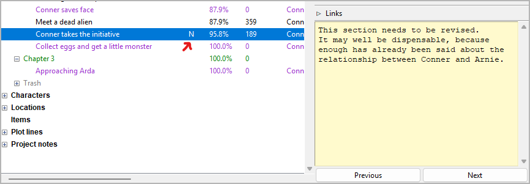
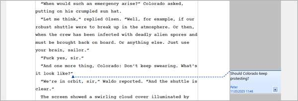

Taking notes
Summary
Organizing a writing project also involves taking notes. novelibre supports this on several levels. The bottom level is the continuous text in the manuscript, then come the elements of the novelibre project tree, such as chapters, sections, plot lines and characters. The top level is the project itself.
“Sticky notes” for individual elements
When organizing the novel in the novelibre workspace, you work with the elements of the project tree. Most of them have a yellow text input field for notes among their properties. If such a field contains text, an “N” appears in the project tree.
Via the Tools menu, the “sticky notes” can be displayed in list form in the web browser. You have a limited export option via the download function of the web browser.
Project notes
For flashes of inspiration, general research results and miscellaneous, novelibre offers its own category of project notes. A project note is listed in the project tree and consists of an index card with title and content, as well as an optional collection of links.

The project notes can also be displayed as a table in the web browser. You have a limited export option via the download function of the web browser.
Project Wiki
If the project notes are not enough for you, you can use the nv_zim plugin to link the writing project to a Zim Desktop Wiki, which offers much more extensive options, from hierarchical pages to to-do lists and a writing journal.
Tip
Wiki pages are text files that can be linked to the project tree elements, i.e. also to the project notes. If the nv_zim plugin is installed, novelibre recognizes if a linked text file belongs to a Zim wiki and opens such a page with the Zim application.
Comments in the manuscript
While writing the manuscript, you can insert comments into the running text with Writer, which then appear as small colored text boxes in the right margin if set accordingly. This is very practical for placeholders or markers, for example.
novelibre adopts such comments during manuscript import, and the text viewer displays them in color.